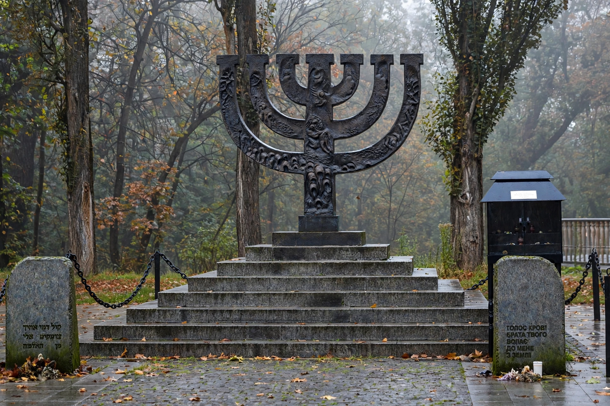

Einsatzgruppen
| Einsatzgruppen | |
|---|---|
 | |
| Active | 1939–1945 |
| Country | Nazi Germany |
| Allegiance | SS; Reich Security Main Office (RSHA) |
| Role | Mobile killing units |
| Victims | More than 1.3 million people, overwhelmingly Jews |
The Einsatzgruppen (German for "deployment groups") were paramilitary death squads of Nazi Germany, drawn mainly from the SS, SD, Gestapo, and Order Police, responsible for mass murder by shooting in German-occupied Europe during World War II. Operating behind the advancing German army, they murdered more than 1.3 million people — the great majority of them Jews — as well as Roma, Soviet political officials, prisoners of war, people with disabilities, and others. Their operations, sometimes called the "Holocaust by bullets," formed the first phase of the genocide that continued in extermination camps such as Treblinka and Sobibór.
Formation and operations
The units were first deployed during the annexation of Austria, the occupation of Czechoslovakia, and the 1939 invasion of Poland, where they targeted Polish elites and Jews. Four main groups (A, B, C, and D), each subdivided into Einsatzkommandos and Sonderkommandos, followed the army groups into the Soviet Union in June 1941 under Operation Barbarossa. Their commanders reported directly to RSHA chief Reinhard Heydrich.
Mass killings
Victims were typically rounded up with the help of local auxiliaries, marched to ravines, forests, or anti-tank ditches, forced to undress, and shot. The most infamous single operation took place at Babi Yar outside Kyiv on September 29–30, 1941, where Einsatzgruppe C reported murdering 33,771 Jews in two days. The units sent detailed numerical reports to Berlin — documents that later became central evidence at war-crimes trials. From 1942, as the killing program shifted to gas chambers in camps like Bełżec and Chełmno, the Einsatzgruppen continued shootings and anti-partisan operations.
Trials
Twenty-four leaders of the units were tried by an American military tribunal in the Einsatzgruppen Trial at Nuremberg (1947–48), the largest of the subsequent Nuremberg proceedings. Fourteen death sentences were imposed, though only four were carried out. Commander Otto Ohlendorf testified openly about the murder of some 90,000 people by his unit. Documentation of the crimes is preserved by Yad Vashem and the United States Holocaust Memorial Museum.